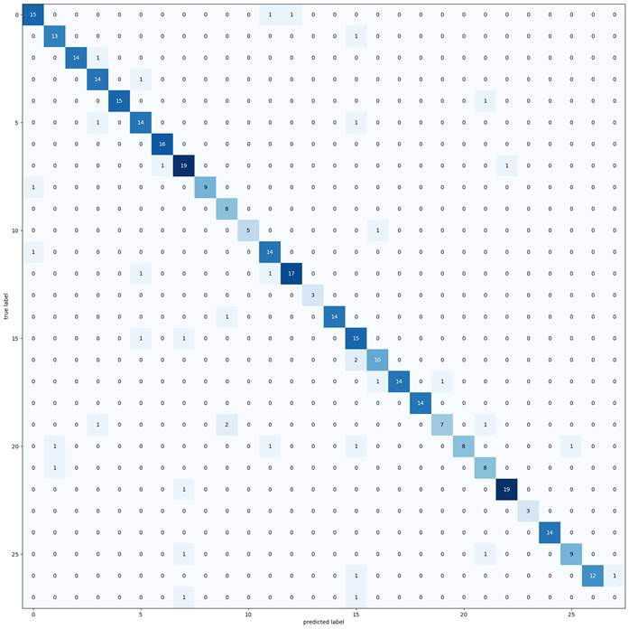

Author: Amit Yadav
Date: 2021-10-14 11:00:00
mail: amitech90@gmail.com
project: Car logo classification
Final output
Video is also in the folder.
Architecture used: ResNet50, VGG19
Dataset: data
|__ train
|__ test
Car Brands:
'Audi.common', 'BMW.common', 'Chevrolet.common', 'Datsun.common', 'Fiat.common', 'Ford.common', 'Honda.common', 'Hyundai.common', 'ISUZU.common', 'Jaguar.frontal', 'Jaguar.rear', 'Jeep.common', 'Kia.common', 'Kia.new', 'Mahindra.common', 'Maruti-Suzuki.common', 'Mercedes-Benz.common', 'MG-Motor.common', 'Mitsubishi.common', 'Nissan.common', 'Renault.common', 'Skoda.common', 'Tata.common', 'Tata.text', 'Toyota.common', 'unknown', 'Volkswagen.common', 'Volvo.frontal'
----------------------------------------------------------------------------------------------------------------------------------------------
ResNet50 Architecture:
Model: "resnet50"
code in: car_logo_resnet.ipynb
workflow:
1. Load the images and visualize them
2. Found a standard ratio and make it as standard input size for the model
3. Data Augmentation
4. Data flow pipeline
5. Model building (used transfer learning)
6. Model training
7. Model evaluation
For 20 Epochs
Trained for 50 epoch but model peaked so earlystopped at 43 with patience 10
Output in folder: results_on_resnet.csv
------------------------------------------------------------------------------------------------------------------------------------------------
VGG19 Architecture:
Model: "vgg19"
code in car_logo_vgg19.ipynb
workflow:
1. Load the images and visualize them
2. Found a standard ratio and make it as standard input size for the model
3. Data Augmentation
4. Data flow pipeline
5. Model building (used transfer learning)
6. Model training
7. Model evaluation
For 50 epochs

Confusion matrix for 50 epochs
Output in folder: results_on_vgg.csv
----------------------------------------------------------------------------------------------------------------------------------------------